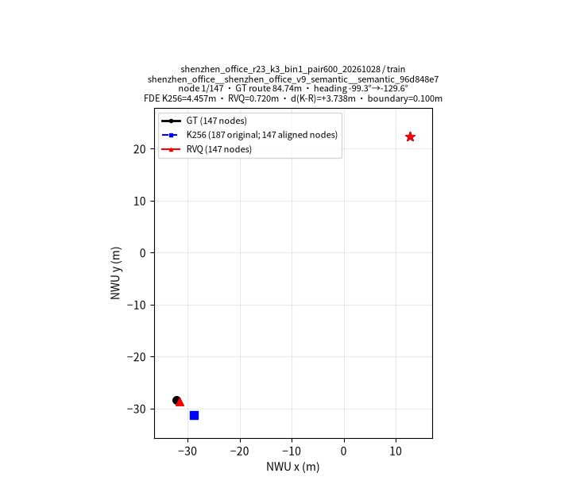
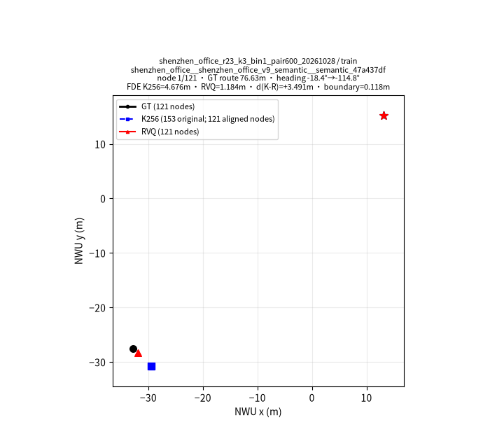
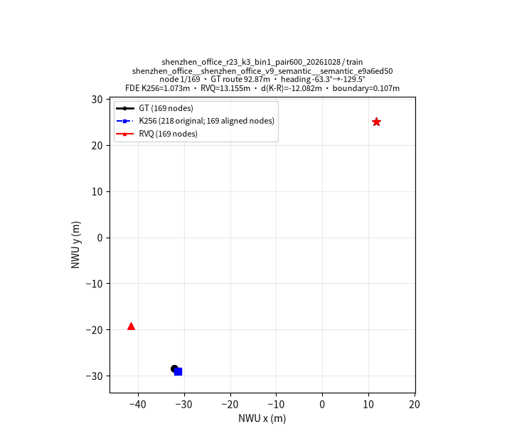
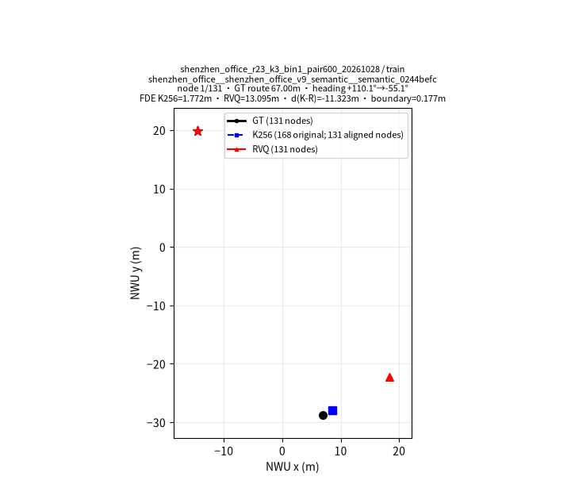
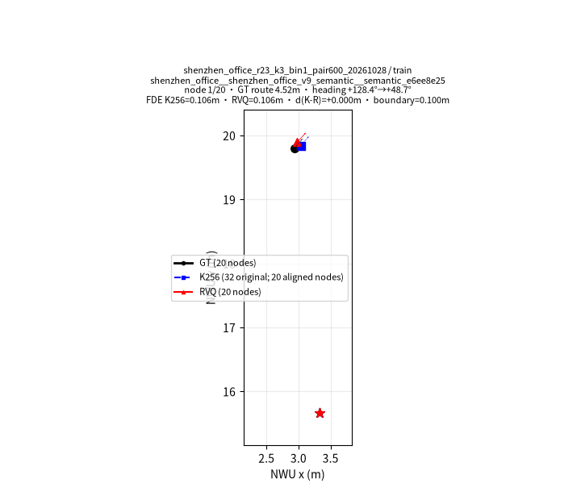
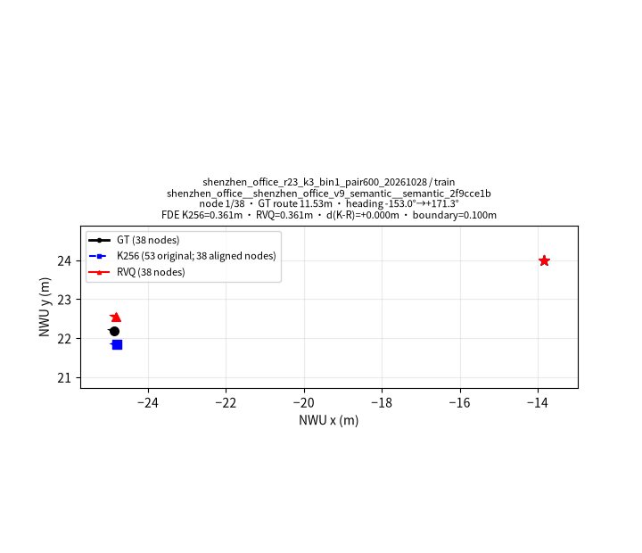
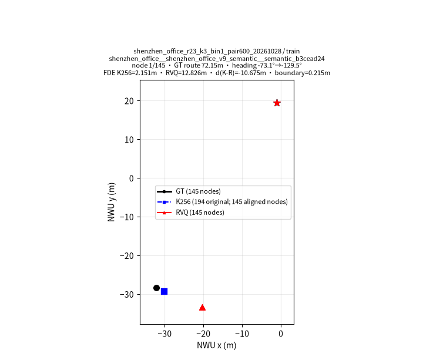
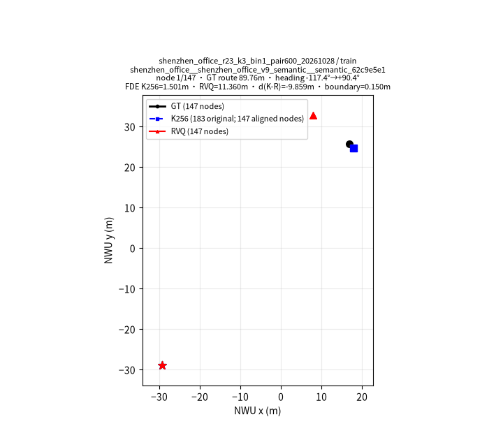

256
使用码数
深圳 R23 · 数据发版报告
本页面由本次冻结数据、最终编码统计和交付清单生成。
本批K256重新拟合；RVQ固定码本与既有beam编码结果复用后，对当前完整保留集独立验证。最终各有 80,475 条轨迹；K256/RVQ样本分别为 6,868,697 / 5,167,420。离线重建误差不代表策略成功率。
| 属性 | K256 | Pointing + Object + RVQ-H5 |
|---|---|---|
| 表示对象 | 原始相邻真实帧之间的三维局部动作 | Object、Pointing 与三层 RVQ；预测未来五个绝对局部位姿 |
| 观测采样 | 全部原始相邻真实观测帧 | 从原始帧中选择连续宏动作保留节点，保留真实时间戳 |
| 动作维度 / 坐标系 | 前向m、左向m、逆时针yaw弧度；当前机身局部坐标 | 五点均相对同一个当前观测：前向m、左向m、逆时针yaw弧度 |
| 预测 / 执行 | 预测1个相邻观测动作并执行1步，再获取下一观测 | 预测5个未来真实节点；仅执行第一点 decoded[0]，随后重新观测和重规划 |
| 码本来源 | /cpfs-normal/xuyuan/data-workspace/shenzhen-r23-qc-k256-rvq-h5-20261104-v2/k256/codebook.npz SHA256 965b23d9e04805c6e4b86ae4363bab75732d49082923c5165bbea68c1e3cb7ae 均值/尺度归一化 | /cpfs-normal/xuyuan/data-workspace/shenzhen-r23-qc-k256-rvq-h5-20261104-v2/deps/codebook.npz SHA256 415dbdf0f5da122557bbdfe9db698d2bde52662b614472c53b8ee615259b2177 依赖固定码本；本批未重新拟合 |
| 拟合 / 评测范围 | train 80,475 条，每条轨迹等权；本批没有eval/probe，指标为训练数据离线重建误差。manifest SHA256 95299590116e22b7520c06b893b02ea7885017ad9db36845d174de080f06e0ec | 复用同一固定RVQ码本、保留节点、targets和既有beam编码结果；本批对全量输出重新独立验证，不重跑beam搜索 |
| 运动 ID / 类型 | 1–256，uint16 | 每层0–255整数ID；3层码本形状 [3, 256, 15] |
| STOP | ID 0，uint16独立终止码 | 三层全0（[0,0,0]），Pointing <apos_1299> 同步终止 |
| 最终轨迹 / 样本 | 80,475 / 6,868,697 | 80,475 / 5,167,420 |
| 读取器 | /cpfs-normal/xuyuan/data-workspace/shenzhen-r23-qc-k256-rvq-h5-20261104-v2/reader.py | /cpfs-normal/xuyuan/data-workspace/shenzhen-r23-qc-k256-rvq-h5-20261104-v2/reader.py |
码频率、熵、有效码数和前10占比仅统计 6,788,222 个运动码（ID 1–256）；STOP 另计 80,475 个。


K256每码频率与解码位姿：下载 k256_code_usage.csv · 下载 rvq_layer_code_usage.csv · 下载 rvq_complete_triples.csv
| K256动作类别（由码字阈值分类） | 计数 |
|---|---|
| STOP | 80,475 |
| straight | 4,633,981 |
| turn | 3,768 |
| in_place_turn | 908,689 |
| low_displacement | 1,241,784 |
阈值：STOP: code==0；in_place_turn: translation<0.02m and abs(yaw)>=10deg；low_displacement: translation<0.05m after in-place-turn test；turn: abs(yaw)>=10deg after preceding tests；straight: otherwise

每层和完整三元组均统计 5,086,945 个非STOP节点；完整000终止节点 80,475 个另计。单层0可以是普通运动码。
| 层 | Token数 | 已用码数 | 有效码数 | 熵(bit) | 前10码占比 |
|---|---|---|---|---|---|
| L1 | 5,086,945 | 248 | 91.89 | 6.522 | 26.56% |
| L2 | 5,086,945 | 256 | 113.79 | 6.830 | 29.62% |
| L3 | 5,086,945 | 255 | 120.57 | 6.914 | 27.68% |
三层单码边际统计的分母各为 5,086,945 个非STOP宏节点；边际统计不等于完整三元组频率。完整三元组：143,594 种 / 5,086,945 个，前10种占 6.99%。
| 完整码三元组 (L0,L1,L2) | 频数 |
|---|---|
| (35, 177, 24) | 56,109 |
| (35, 127, 17) | 45,850 |
| (35, 120, 24) | 39,037 |
| (35, 127, 88) | 37,260 |
| (35, 177, 0) | 36,968 |
| (35, 120, 88) | 32,295 |
| (35, 55, 88) | 30,562 |
| (35, 55, 24) | 27,636 |
| (35, 127, 24) | 26,299 |
| (2, 55, 0) | 23,623 |
下载 k256_code_usage.csv · 下载 rvq_layer_code_usage.csv · 下载 rvq_complete_triples.csv
每行只对应一个误差量和一个单位。原始单步K256按所有相邻动作加权；另列先逐轨迹求均值再按轨迹统计。局部H5对共同真实未来节点比较，padding剔除；最后有效目标可少于第5点。全程开环从起点连续解码，不用GT中途校正，二者分列。
| 分支/加权方式 | 误差量 | 单位 | n | 均值 | P50 | P95 |
|---|---|---|---|---|---|---|
| K256 · 按动作加权 | 原始相邻动作平移误差 | m | 6,788,222 | 0.00304 | 0.00240 | 0.00833 |
| K256 · 按动作加权 | 原始相邻动作航向误差 | deg | 6,788,222 | 0.045 | 0.000 | 0.255 |
| K256 · 按轨迹加权 | 原始相邻动作平移误差（轨迹均值） | m | 80,475 | 0.00310 | 0.00303 | 0.00395 |
| K256 · 按轨迹加权 | 原始相邻动作航向误差（轨迹均值） | deg | 80,475 | 0.047 | 0.044 | 0.076 |
| K256 | 首个宏目标平移误差 | m | 80,475 | 0.00381 | 0.00372 | 0.00492 |
| K256 | 首个宏目标航向误差 | deg | 80,475 | 0.056 | 0.050 | 0.097 |
| K256 | 局部H5平均位置误差 | m | 80,475 | 0.00737 | 0.00711 | 0.01016 |
| K256 | 局部H5最后有效目标位置误差 | m | 80,475 | 0.01082 | 0.01031 | 0.01553 |
| K256 | 局部H5航向误差 | deg | 80,475 | 0.117 | 0.106 | 0.211 |
| K256 | 全程开环ADE | m | 80,475 | 0.15171 | 0.09700 | 0.46883 |
| K256 | 全程开环FDE | m | 80,475 | 0.30317 | 0.18643 | 0.97487 |
| K256 | 全程开环终点航向漂移 | deg | 80,475 | 1.009 | 0.793 | 2.662 |
| RVQ-H5 | 首个执行动作平移误差 | m | 80,475 | 0.01556 | 0.01512 | 0.02337 |
| RVQ-H5 | 首个执行动作航向误差 | deg | 80,475 | 0.152 | 0.144 | 0.248 |
| RVQ-H5 | 局部H5平均位置误差 | m | 80,475 | 0.02029 | 0.01968 | 0.02986 |
| RVQ-H5 | 局部H5最后有效目标位置误差 | m | 80,475 | 0.02622 | 0.02534 | 0.03936 |
| RVQ-H5 | 局部H5航向误差 | deg | 80,475 | 1.263 | 1.201 | 2.208 |
| RVQ-H5 | 全程开环ADE | m | 80,475 | 0.29275 | 0.18786 | 0.89104 |
| RVQ-H5 | 全程开环FDE | m | 80,475 | 0.57933 | 0.34609 | 1.91393 |
| RVQ-H5 | 全程开环终点航向漂移 | deg | 80,475 | 1.838 | 1.408 | 5.013 |
路线层按配对轨迹路径长度三分位划分；只报告实际观测到的路程区间，不补造路线长度分位数。
| 路线层 | 轨迹数 | 实际路程范围 (m) | 分支 | 误差量 | 单位 | n | 均值 | P50 | P95 |
|---|---|---|---|---|---|---|---|---|---|
| short | 26,825 | 3.00–17.36 | K256 | 路线终点位置误差 | m | 26,825 | 0.10420 | 0.07599 | 0.28795 |
| short | 26,825 | 3.00–17.36 | K256 | 终点航向误差 | deg | 26,825 | 0.84865 | 0.65036 | 2.26279 |
| short | 26,825 | 3.00–17.36 | RVQ-H5 | 路线终点位置误差 | m | 26,825 | 0.20597 | 0.15371 | 0.54930 |
| short | 26,825 | 3.00–17.36 | RVQ-H5 | 终点航向误差 | deg | 26,825 | 1.43740 | 1.06277 | 3.99717 |
| medium | 26,825 | 17.36–35.71 | K256 | 路线终点位置误差 | m | 26,825 | 0.26221 | 0.20369 | 0.67720 |
| medium | 26,825 | 17.36–35.71 | K256 | 终点航向误差 | deg | 26,825 | 1.01485 | 0.81747 | 2.61853 |
| medium | 26,825 | 17.36–35.71 | RVQ-H5 | 路线终点位置误差 | m | 26,825 | 0.49023 | 0.36932 | 1.29045 |
| medium | 26,825 | 17.36–35.71 | RVQ-H5 | 终点航向误差 | deg | 26,825 | 1.87835 | 1.46796 | 5.03365 |
| long | 26,825 | 35.71–96.65 | K256 | 路线终点位置误差 | m | 26,825 | 0.54311 | 0.42455 | 1.40551 |
| long | 26,825 | 35.71–96.65 | K256 | 终点航向误差 | deg | 26,825 | 1.16409 | 0.95082 | 2.94409 |
| long | 26,825 | 35.71–96.65 | RVQ-H5 | 路线终点位置误差 | m | 26,825 | 1.04180 | 0.77310 | 2.79546 |
| long | 26,825 | 35.71–96.65 | RVQ-H5 | 终点航向误差 | deg | 26,825 | 2.19916 | 1.77130 | 5.67845 |
共同可比轨迹 80,475 条。窗口按1至5个未来真实宏节点逐层统计；同一路线的连续窗口重叠，padding与无效尾窗排除，每轨贡献节点数可变。上表按有效窗口加权，下表先求每轨平均再按轨迹加权。同一窗口同时报告实际路径跨度米数、冻结时间戳跨度秒数及两分支位置/航向误差。
| 未来节点跨度 | 分支 | 窗口n | 跨度均值m | 跨度P50m | 跨度P95m | 时长均值s | 时长P50s | 时长P95s | 位置均值m | 位置P50m | 位置P95m | 航向均值° | 航向P50° | 航向P95° |
|---|---|---|---|---|---|---|---|---|---|---|---|---|---|---|
| 第1个未来宏节点 | K256 | 5,086,945 | 0.465 | 0.375 | 0.985 | 0.667 | 0.500 | 1.500 | 0.00371 | 0.00326 | 0.00923 | 0.052 | 0.000 | 0.292 |
| 第1个未来宏节点 | RVQ-H5 | 5,086,945 | 0.465 | 0.375 | 0.985 | 0.667 | 0.500 | 1.500 | 0.01540 | 0.00914 | 0.05297 | 0.149 | 0.051 | 0.593 |
| 第2个未来宏节点 | K256 | 5,006,470 | 0.941 | 0.770 | 1.968 | 1.321 | 1.000 | 2.500 | 0.00559 | 0.00464 | 0.01411 | 0.082 | 0.002 | 0.431 |
| 第2个未来宏节点 | RVQ-H5 | 5,006,470 | 0.941 | 0.770 | 1.968 | 1.321 | 1.000 | 2.500 | 0.01702 | 0.00988 | 0.05729 | 0.984 | 0.122 | 4.543 |
| 第3个未来宏节点 | K256 | 4,925,995 | 1.425 | 1.215 | 2.949 | 1.972 | 1.500 | 3.000 | 0.00735 | 0.00609 | 0.01817 | 0.112 | 0.004 | 0.543 |
| 第3个未来宏节点 | RVQ-H5 | 4,925,995 | 1.425 | 1.215 | 2.949 | 1.972 | 1.500 | 3.000 | 0.01902 | 0.01124 | 0.06307 | 1.273 | 0.195 | 5.674 |
| 第4个未来宏节点 | K256 | 4,845,520 | 1.915 | 1.643 | 3.928 | 2.623 | 2.500 | 4.000 | 0.00904 | 0.00752 | 0.02216 | 0.141 | 0.006 | 0.639 |
| 第4个未来宏节点 | RVQ-H5 | 4,845,520 | 1.915 | 1.643 | 3.928 | 2.623 | 2.500 | 4.000 | 0.02074 | 0.01306 | 0.06650 | 1.500 | 0.309 | 7.114 |
| 第5个未来宏节点 | K256 | 4,765,045 | 2.410 | 2.007 | 4.904 | 3.273 | 3.500 | 4.500 | 0.01075 | 0.00906 | 0.02608 | 0.170 | 0.028 | 0.710 |
| 第5个未来宏节点 | RVQ-H5 | 4,765,045 | 2.410 | 2.007 | 4.904 | 3.273 | 3.500 | 4.500 | 0.02742 | 0.01556 | 0.09248 | 2.377 | 0.601 | 11.248 |
| 未来节点跨度 | 分支 | 轨迹n | 轨迹均值误差m | P50m | P95m | 航向均值° | P50° | P95° |
|---|---|---|---|---|---|---|---|---|
| 第1个未来宏节点 | K256 | 80,475 | 0.00381 | 0.00372 | 0.00492 | 0.056 | 0.050 | 0.097 |
| 第1个未来宏节点 | RVQ-H5 | 80,475 | 0.01556 | 0.01512 | 0.02337 | 0.152 | 0.144 | 0.248 |
| 第2个未来宏节点 | K256 | 80,475 | 0.00573 | 0.00553 | 0.00769 | 0.088 | 0.079 | 0.158 |
| 第2个未来宏节点 | RVQ-H5 | 80,475 | 0.01741 | 0.01677 | 0.02694 | 1.016 | 0.938 | 1.903 |
| 第3个未来宏节点 | K256 | 80,475 | 0.00754 | 0.00725 | 0.01048 | 0.120 | 0.107 | 0.218 |
| 第3个未来宏节点 | RVQ-H5 | 80,475 | 0.01958 | 0.01876 | 0.03071 | 1.309 | 1.197 | 2.499 |
| 第4个未来宏节点 | K256 | 80,475 | 0.00926 | 0.00888 | 0.01321 | 0.150 | 0.136 | 0.276 |
| 第4个未来宏节点 | RVQ-H5 | 80,475 | 0.02147 | 0.02072 | 0.03225 | 1.543 | 1.446 | 2.829 |
| 第5个未来宏节点 | K256 | 80,475 | 0.01100 | 0.01051 | 0.01603 | 0.180 | 0.164 | 0.334 |
| 第5个未来宏节点 | RVQ-H5 | 80,475 | 0.02817 | 0.02693 | 0.04299 | 2.415 | 2.298 | 4.256 |
| 宏动作量 | 单位 | n | 均值 | P50 | P95 |
|---|---|---|---|---|---|
| GT宏动作平移距离 | m | 5,086,945 | 0.4653 | 0.3749 | 0.9850 |
| GT宏动作有符号转角 | deg | 5,086,945 | 0.0763 | 0.0000 | 21.9881 |
| GT宏动作时长 | s | 5,086,945 | 0.6672 | 0.5000 | 1.5000 |
GT微动作：平移≤10cm且绝对转角≤10°；解码微动作：平移≤5cm且转角≤5°，仅计有效目标、不计padding。合并前后分别统计真实GT相邻动作边与保留节点间动作边。


| 合并统计 | 动作/轨迹数 | 比较分母 | 比例/说明 |
|---|---|---|---|
| 保留集原始微动作 | 1,738,833 | 6,788,222 | 25.615% |
| 保留节点之间微动作 | 0 | 5,086,945 | 0.000% |
| 成功跳过的原始帧 | 1,701,277 | 6,868,697 | 实际合并 |
| 未解决GT轨迹 | 0 | 80,475 | 分母为QC保留轨迹 |
| 未解决RVQ轨迹 | 0 | 80,475 | 分母为QC保留轨迹 |
| Beam32重试节点 | 0 | 5,086,945 | 本批继承的编码记录 |
| 回退航向边 | 0 | 5,086,945 | 分母为宏动作边 |
全部QC保留原始帧 6,868,697；保留宏节点 5,167,420；beam32重试节点 0；解码后残留微动作节点 0。
核对 5,167,420 个节点，匹配 5,167,420 个；一致=true。STOP规则：all-zero RVQ node iff pointing token is








下载 k256_code_usage.csv · 下载 rvq_layer_code_usage.csv · 下载 rvq_complete_triples.csv · 下载编码统计 JSON · 下载误差统计 CSV · 数据与训练入口